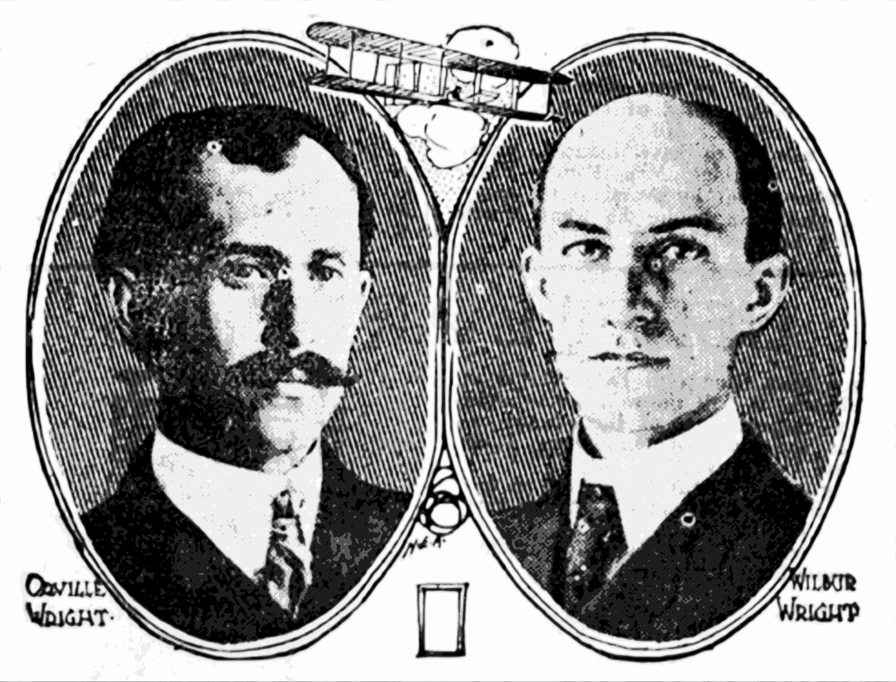

>
-
Wilbur Wright is born in Millville, Indiana.
-
Orville Wright is born in Dayton, Ohio.
-
The Wright brothers open their bicycle sales and repair shop in Dayton.
-
The brothers begin to study and experiment with flight.
-
On December 17, the Wright Flyer makes its historic powered flight in Kitty Hawk, North Carolina.
-
They make significant refinements to their aircraft's design and control mechanisms.
-
The Wright brothers sign their first contract to sell airplanes to the U.S. Army Signal Corps.
-
They open the first civilian flight training school in Montgomery, Alabama.
-
Orville Wright pilots the first commercial flight in the United States.
-
Orville Wright passes away in Dayton, Ohio.
-
Wilbur Wright passes away in Dayton, Ohio.
Wright BrothersThe Wright Brothers, Orville and Wilbur, are renowned pioneers in the field of aviation who forever altered the course of human history with their groundbreaking invention—the airplane. Their relentless determination, ingenious engineering, and indomitable spirit ushered in a new era of transportation and exploration that continues to shape the world today  |
The Wright Brothers' JourneyOrville and Wilbur Wright were born in the late 19th century in Dayton, Ohio. From an early age, they exhibited an innate curiosity and fascination with flight, inspired by the soaring birds that captured their imaginations. Their journey to conquer the skies was marked by years of meticulous research, experimentation, and innovation. In 1903, the Wright Brothers achieved a monumental milestone by successfully launching and piloting the world's first powered, controlled, and sustained flight. On December 17, 1903, at Kitty Hawk, North Carolina, Orville piloted their aircraft, the Wright Flyer, for a distance of 120 feet in just 12 seconds. This achievement marked the birth of modern aviation.  |
ConclusionThe Wright Brothers' invention of the airplane marked a pivotal moment in human history, fundamentally altering the way people live, work, and connect with one another. Their relentless pursuit of flight exemplifies the spirit of exploration and innovation that continues to drive progress in today's rapidly evolving world. The impact of the airplane on transportation, commerce, science, and culture underscores the enduring legacy of the Wright Brothers and their remarkable contribution to shaping the course of modern civilization |
|---|
More about Wright Brothers